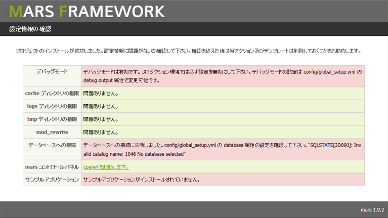

戻る
最終更新日: 2010 年 12 月 3 日
Step 1: 環境設定
まずはフレームワークをインストールする前にソフトウェアの開発環境を整えましょう。
PHP の設定
delta は PHP 5.3 以降で動作するフルスタック型のフレームワークです。次に示す PHP モジュールに依存しているため、モジュールがインストールされていない場合は組み込みが必要になります。各モジュールがインストールされているかどうかは phpinfo() 関数で確認して下さい。
| モジュール名 | モジュールの概要 |
|---|---|
| mbstring | PHP でマルチバイト文字列を扱う拡張モジュール。 |
| SPL | Standard PHP Library。標準的な問題を解決するためのインタフェースやクラスを提供。(PHP 5.3 以降はデフォルトでコンパイル済み) |
| PDO | PHP Data Object。PHP からデータベースにアクセスするためのインタフェース、及びドライバを提供。(データベースを使用しない場合はインストール不要) |
モジュールがインストールされていない場合、下記の手順に従ってモジュールのインストールが必要になります。
- Shell Code# configure (Linux 環境における静的インストールの例)
$ cd /usr/local/src/php-x.x.x
$ make clean
$ ./configure --enable-mbstring --enable-spl --enable-pdo --with-pdo-mysql=/usr/local/mysql
$ make
$ make install
Windows 環境であれば php.ini ファイルでモジュールの追加が可能です。設定書き換え後は Web サーバを再起動して下さい。
- Configration Code# php.ini (Windows 環境の例)
# コメントアウトを外してモジュールを有効化する
extension=php_mbstring.dll
extension=php_pdo.dll
# 使用するデータベースに合ったドライバをロード
extendson=php_pdo_mysql.dll
Web サーバの設定
フレームワークを動作させる上で推奨する Web サーバは Apache 2.2 以降です。Apache を利用する場合、mod_alias と mod_rewrite モジュールが有効化されている必要があります。インストールされていない場合は次の手順に従ってモジュールをインストールしておいて下さい。
- Shell Code# mod_rewrite の静的インストール (Linux の場合)
$ cd /usr/local/src/httpd-x.x.x
$ make clean
$ ./configure --enable-rewrite --enable-alias
$ make
$ make install
Windows であれば httpd.conf ファイルから設定を変更することができます。設定書き換え後は Web サーバを再起動して下さい。
- Configration Code# mod_rewrite を有効にする(Windows の場合)
# コメントアウトを外してモジュールを有効化する
LoadModule alias_module modules/mod_alias.so
LoadModule rewrite_module modules/mod_rewrite.so
DB サーバのインストール (任意)
フレームワークに付属するサンプルアプリケーションを動作させるには DB サーバが必要となります。特に必要となる設定はありませんが、クライアントプログラム (PDO) から接続する際のエンコードの指定だけは注意が必要です。delta はデフォルトエンコーディングに UTF-8 を使用しますが、DB サーバのデータベースエンコーディングに他のエンコードを使用している場合は文字コードの変換が必要となります。
データベースエンコーディングが UTF-8 以外の場合、MySQL であれば設定ファイル上で次のような指定が必要となるでしょう。
- Shell Code# my.cnf の設定例
[mysqld]
default-character-set=utf8
# Web サーバと DB サーバが同じ場合
[client]
default-character-set=utf8
- エンコードの設定は使用する DB や環境によって変わります。詳しくはデータベースのマニュアルを参照して下さい。
- 可能な限り、クライアントエンコーディングとデータベースエンコーディングは統一しておくべきです。
Step 2: delta のインストール
初めに delta の最新版パッケージを Git リポジトリ (あるいはアーカイブリスト) から入手して下さい。ダウンロードしたパッケージには、delta のコアライブラリやプロジェクトのスケルトン、ドキュメント、API が含まれています。(以後コアパッケージと称します) 実際にアプリケーションを開発する際は、このパッケージとは別にプロジェクトディレクトリを作成し、その中でプログラムを組んでいきます。
コアパッケージは Web から参照されない場所に配置して下さい。フレームワークはライブラリという扱いなので、Linux であれば /var/repos/delta といったディレクトリに設置すると良いでしょう。
delta コマンドにパスを通す
delta にはプロジェクトの作成やモジュールの追加を簡単に行うためのユーティリティコマンド (delta.php) が付属しています。コマンド自体は PHP スクリプトのため php を通して実行すれば良いのですが、パスを通すことでどこからでもコマンドが実行できるようになります。
コマンドにパスを通す場合、コアパッケージ内の次のファイルを OS のパスが通っている場所にコピーして下さい。
| OS | ファイルの場所 |
|---|---|
| Windows | command/delta.bat |
| Linux | command/delta (sh) |
ファイルを設置したら delta.bat (あるいは delta) をエディタで開き、ソース内の "@DELTA_HOME@" と書かれた部分をコアパッケージの絶対パスに置き換えて下さい。
以上で設定は完了です。コンソール上で delta と打ち込むことで次のような結果が表示されるようになります。
- Shell Code# delta コマンドの使用 (Linux)
$ delta
Usage:
delta [Options]
Options:
add-action Add action to current module.
If you want to use a skeleton template,
please edit 'templates/html/skeleton.php'.
add-module Add module to current project.
add-theme Add theme to current project.
clear-cache Clear the cache of all.
create-project Create new project.
...
モジュールの追加やキャッシュの削除に関しては、プロジェクト内のディレクトリであればどこからでも実行することができます。
プロジェクトの作成
それでは早速アプリケーションを格納するための入れ物であるプロジェクトを作成してみましょう。delta コマンドでプロジェクトを作成するには、"create-project" オプションを指定します。
- Shell Code# プロジェクトの作成
# 新規プロジェクトの作成
$ delta create-project
# プロジェクトのインストールディレクトリ (未指定時はカレントディレクトリがインストール先となる)
> Install path [/home/webapp]: /var/www
# プロジェクト名 (未指定時はカレントディレクトリ "webapp" がプロジェクト名となる)
> Project name [webapp]: first_project
# デフォルトモジュール名の指定
> Create default module name: hello
# モジュールが first_project/modules/hello にインストールされた
Creatte module successfully. [/var/www/first_project/modules/hello]
# プロジェクトのインストール成功通知
Project installation is complete. [/var/www/first_project]
# サンプルアプリケーションをインストールするかどうか
> Do you want to install the sample application? (Y/N): N
プロジェクトのインストールが完了したらプロジェクトディレクトリ (/var/www/first_project) に移動してみましょう。アプリケーションの骨組みとなる各種ディレクトリが作成されていることが分かります。
各ディレクトリの役割については ディレクトリ構成 を参照して下さい。
Step 3: アプリケーションの起動
最後に webroot ディレクトリを Web の公開ディレクトリとして設定します。
- Configration Code# {httpd}/conf/extra/httpd-vhosts.conf (VirtualHost によるサイト設定)
<VirtualHost delta:80>
ServerName delta
DocumentRoot "/var/www/first_project/webroot"
Alias /assets/base {DELTA_ROOT_DIR}/webapps/cpanel/webroot/assets/base
</VirtualHost>
{DELTA_ROOT_DIR} の部分にはフレームワークをインストールしたディレクトリを指定して下さい。
全ての設定を書き換えたら Web サーバを再起動して下さい。ブラウザから "http://delta/" をリクエストするとインストール完了ページが表示されるようになります。

mod_rewrite が動作しない場合、.do を実行するとエラーが起きる を参照して下さい。
- webroot は Web に公開される唯一のルートディレクトリです。css (カスケーディングスタイルシート) や js (JavaScript) といった静的ファイルは全てこのディレクトリ下 (webroot/assets 下を推奨) に設置する必要があります。
- cpanel は delta アプリケーションを管理するためのコントロールパネルです。主にクラスのひな形を作成したり、パフォーマンスを測定する機能を提供します。cpanel には "http://{アプリケーションホスト名}/cpanel/" でアクセスすることができます。